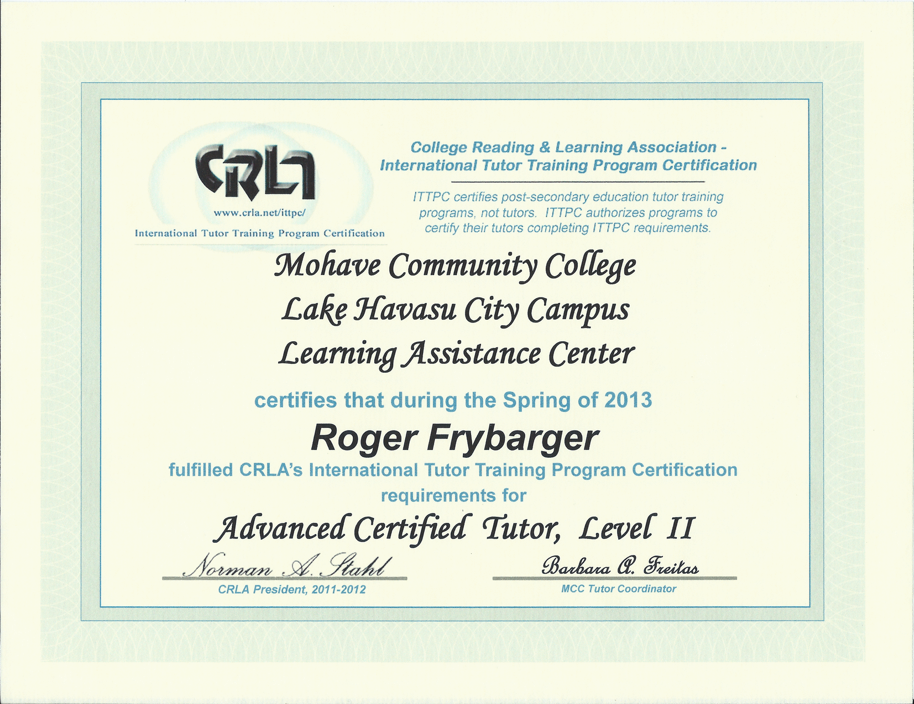

Hello! I am Roger Frybarger. I despise bragging about myself, which is why this page is so bland. However, since the point of this page seems to be to do exactly that, here is some information about me: I am a jack of many trades revolving around computer programming, math tutoring, Linux, electronics, and related tinkering. Here are the degrees that I have earned in college:
Here are some of the awards and accomplishments that I have earned through my college endeavor:

Here are my tutoring related certifications and accomplishments:
My passion project is Roger's Math Whiteboard, which you can preview online here. Or, if you would prefer to download the full desktop app, you can go to the website that I have created precisely for that purpose over at rogersmathwhiteboard.com. You can also contact me through that site as well if you want. However, since you are here, please explore the following random links and pages that I have created:
I have created an online calculator for converting lines from one form to y=mx+b. It can be found here.
I have created an online calculator for exploring and sizing rainwater collection systems. It can be found here.
I have created a page explaining how my mother and I managed to digitize over 3000 photos in about 2.5 months worth of free time. You can find it here.
I have created a program to smoothly reduce the hotend temperature while 3d printing. I use it to increase bed adhesion while still avoid printing the rest of the part too hot. This program can be found here.
I hope you have enjoyed this page! Please check back sometime! I will be adding more cool stuff as my free time allows.